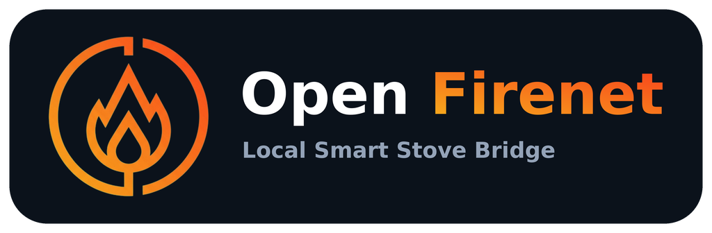
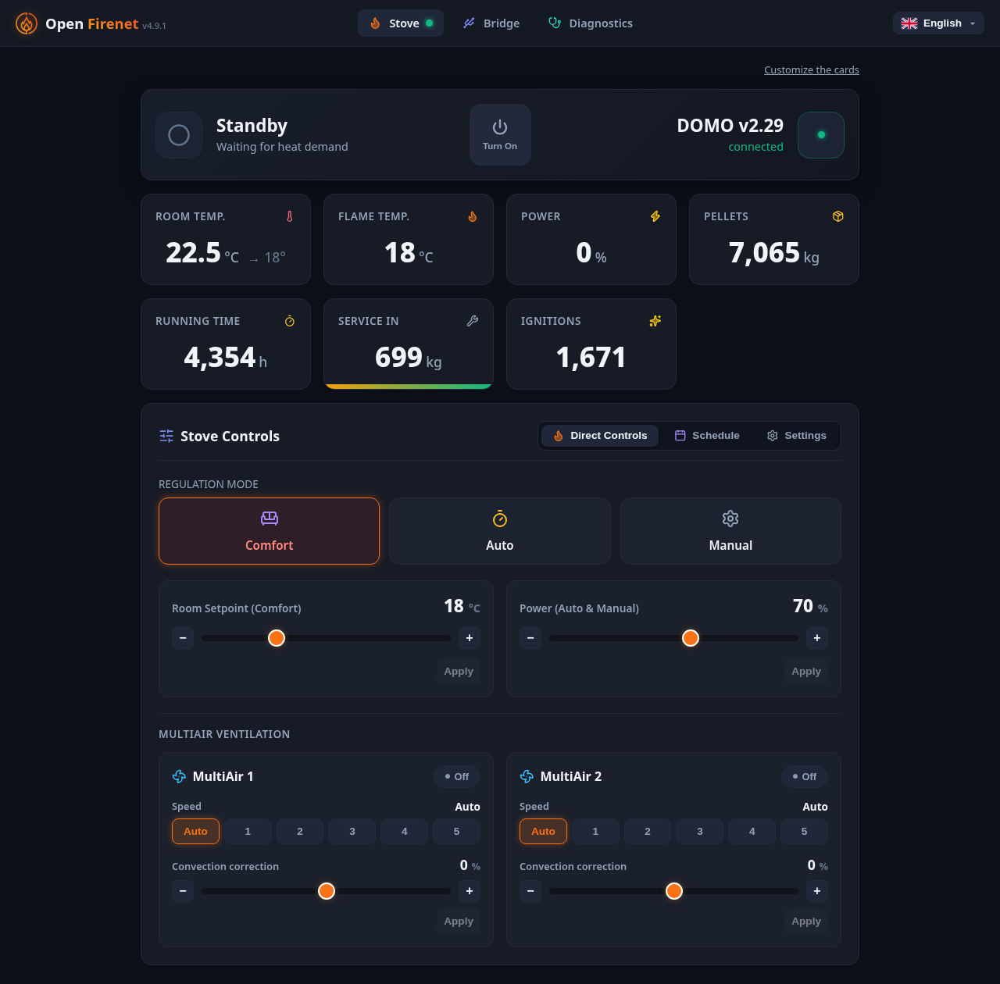
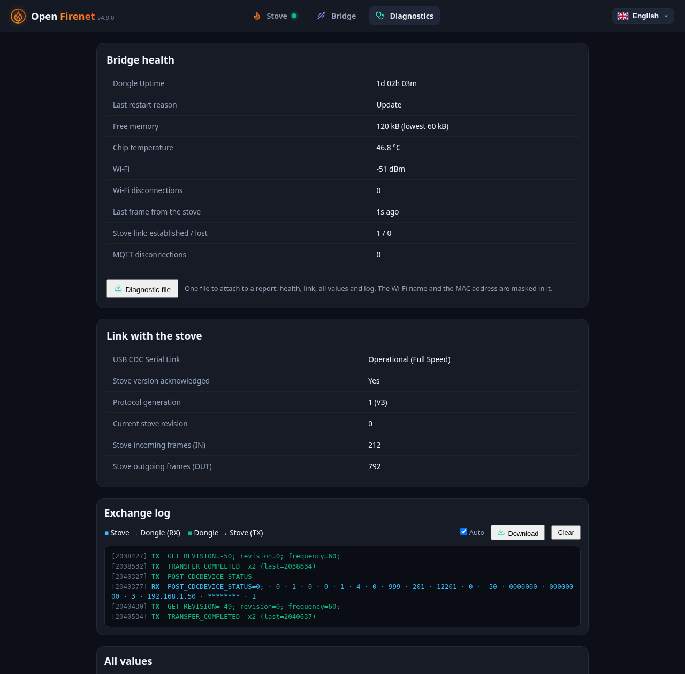

Control local para estufas de pellets RIKA y ANIMO
Open Firenet sustituye la llave RIKA Firenet o ANIMO Wi-Fire por una placa ESP32-S3. Su estufa obtiene una página web local, una API REST, MQTT y una integración nativa para Home Assistant. Sin cuenta en la nube, sin necesidad de conexión a Internet.

http://open-firenet.localCaracterísticas
Control desde su red local
Encendido/apagado, modo de funcionamiento, potencia de calefacción, temperatura de consigna, programación semanal, protección antihielo y ventiladores MultiAir en estufas compatibles.
Todos los datos que reporta la estufa
Temperaturas, consumo de pellets, horas de funcionamiento, cuenta atrás de mantenimiento, códigos de error y aviso: hasta 88 valores con sus nombres originales RIKA.
Integración domótica universal
Una integración dedicada para Home Assistant, una API REST completa y soporte MQTT para Jeedom, openHAB, Node-RED, Domoticz y otros sistemas.
100 % local
El pincho se comunica con la estufa por USB y con usted mediante su red Wi-Fi local. No se envía ningún dato a servidores externos.
Pantalla en el pincho
Con un módulo LilyGO T-Dongle-S3 o un ESP32-S3 Pocket Dongle, el estado de la estufa y la temperatura ambiente se muestran directamente en la pantalla del pincho. Ver la pantalla.

Tres componentes
Firmware
Se ejecuta en el ESP32-S3 conectado a la estufa. Proporciona la interfaz web local y la API REST.
Instalador
Aplicación de escritorio para Windows, macOS y Linux: graba el firmware, configura el Wi-Fi y aplica actualizaciones inalámbricas.
Home Assistant
Termostato completo, ventiladores, interruptor de horario, sensores y diagnósticos, instalables mediante HACS.
Estufas compatibles
Lo determinante es la versión de firmware de la placa base de la estufa, mostrada en el menú Info de la pantalla de la estufa. El pincho la detecta automáticamente.
| Firmware de la estufa | Estado | Notas |
|---|---|---|
| 2.30 | Compatible | Todos los valores y ajustes, incluido el funcionamiento con leña (un informe registrado hasta ahora) |
| 2.29 | Compatible | Todos los valores y ajustes |
| 2.28 | Compatible | Todos los valores y ajustes |
| 2.26 / 2.27 | Compatible | Todos los valores y ajustes |
| 2.25 | Parcial | Soporte preliminar: estado, temperaturas y ajustes principales, programación con una franja diaria. El encendido no se ha probado aún |
| Anterior a 2.25 | No compatible | Haga actualizar la placa base de la estufa a la 2.25 o posterior |
Detalles completos de compatibilidad
Vistazo a la interfaz


